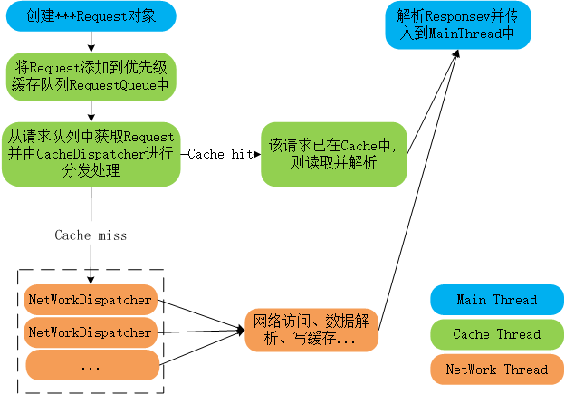

二、Volley源码解析
2.1 Volley框架结构
根据Volley的框架结构,在上一章可以看出所有的Request请求都是按照这个流程处理,那么我将从请求流程进行源代码分析.
其框架主要分为3部分：
(1)Main Thread中创建Request以及解析显示请求返回结果;
(2)Cache Thread在Cache中处理请求,若请求的内容在缓存中已存在,则从缓存中取出并返回;
(3)NetWork Thread,当请求在缓存中找不到时,则需要从访问网络获取数据.
主线程和Cache线程都只有一个,而NetWork Thread线程可以有很多个(默认是4个),这样能够解决并行问题.

2.2 Volley之RequestQueue
RequestQueue请求队列作为Volley框架使用过程第一个需要创建目标,其内部通过调用Volley类的静态函数进行创建.
请求队列作为Volley中所有请求的存储器,其内部使用Set集合来存储创建的Request,所有在队列中或者正在被处理的请求都会在这个集合中.
private final Set
通过Volley的静态函数调用RequestQueue的构造函数创建RequestQueue对象:
其主要工作有：初始化Disk Cache缓存路径、执行网络请求接口NetWork、网络请求调度器NetworkDispatcher和请求结果派送者ResponseDelivery.
在上述创建过程中,无论是CacheDispatcher还是NetworkDispatcher都是继承至Thread.
ResponseDelivery其实是一个接口,其具体实现类似ExecutorDelivery,其构造函数的参数是一个Handler,而Handler的构造函数参数则是Lopper.getMainLooper(),所以这里其实是应用的主线程Looper,也就是说handler其实就是主线的Handler,其作用就是将请求的结果（正确的或者错误的）传输给主线程.
在创建完成RequestQueue对象之后会调用start方法启动所有的dispatcher（CacheDispatcher和NetworkDispatcher）：
对应start方法当然就有stop方法,用于停止cache and network dispatchers：
在start过程中,出现mCacheQueue, mNetworkQueue,这两个的定义如下：
可以看到它们其实都是Java并发（Concurrent）包中提供的利用优先级来执行的阻塞队列PriorityBlockingQueue.显然它们就应该是用来放置从外面传进来的请求,比如JsonRequest,ImageRequest和 StringRequest.
在上述分析了怎么启动怎么停止,那么当创建好Request对象时,怎么样才能添加到请求队列中呢？RequestQueue提供了一个add方法,用于将创建好的Request添加到请求队列中.并判断请求的是否存储于缓存中来进行分类.
当mCacheQueue或者mNetworkQueue利用add方法添加请求之后,在运行的线程就会接收到请求,从而去处理相对应的请求,最后将处理的结果由mDelivery来发送到主线程进行更新.
当请求在缓存线程中或者是在网络线程中处理完成后,每个Request都会去调用对应的finish方法,
下一步会调用RequestQueue的finish()方法：
第2步中,就是判断这个请求有没有缓存,1)如果有，那么我们这个时候，将前面mWaitingQueue中相同CacheKey的一大批请求再扔到mCacheQueue中,为什么现在才扔呢？因为前面我们不知道相同CacheKey的那个请求到底在缓存中有没有;2)如果没有,它需要去网络中获取,那就等到它从网络中获取之后,放到缓存中后,它结束后且已经缓存了,这个时候,我们就可以保证后面那堆相同CacheKey的请求可以在缓存中去取到数据了,而不需要再去网络中获取了.
最后在RequestQueue中还提供了2个方法用于用户自己随时可控地取消请求：
RequestFilter是RequestQueue的内部接口,没有具体实现,上面第二个cancleAll方法的过滤规则就是看Tag是否相等.
到此RequestQueue的源代码核心内容就已经分析完成了.
2.3 Volley之Request
Volley提供的Request有：StringRequest、JsonArrayRequest、JsonObjectRequest、ImageRequest和JsonRequest,其中JsonArrayRequest、JsonObjectRequest继承至JsonRequest,StringRequest、ImageRequest、JsonRequest继承至Request.Volley还可以自定义Request.
Request是一个抽象类.提供了很多的方法,子类需要实现的两个抽象方法为：
具体使用已在前一章讲过,无论是Volley中提供的request还是我们自定义的request,都会通过各自的解析方法解析自定义的数据.
2.4 HttpStack
前面准备了那么多,为了就是进行网络请求,那具体的网络请求是怎么样子的呢？
具体的网络请求实现是在HurlStack/HttpClientStack中实现的,还记得在Volley中创建请求队列时对当前系统版本进行判断,为了就是获取不同网络请求框架:
其中NetWork是一个接口,它只包含一个方法： public NetworkResponse performRequest(Request<?> request) throws VolleyError;
其实现类就是BasicNetwork类,根据系统版本选择不同的网络请求框架并作为参数传入到BasicNetwork中.
NetworkResponse相当于一个Bean,其作用是将网络请求返回的数据、各种状态码、请求消耗时间等进行封装.
2.5 NetworkDispatcher
网络请求了解了,那管理网络请求的线程呢？其实就是NetworkDispatcher,当用户提交request之后,若CacheDispatcher中没有对应的请求缓存,就必须要进行网络请求,那这时的就需要NetworkDispatcher线程来进行管理了.
NetworkDispatcher线程主要完成了：
1) 调用 mQueue的take()方法从队列中获取请求，如果没有请求，则一直阻塞在那里等待，直到队列中有新的请求到来。
2) 判断请求有没有被取消，如果被取消，则重新获取请求。
3) 调用Network对象将请求发送到网络中，并返回一个 NetworkResponse对象。
4) 调用请求的pareseNetworkResonse方法，将NetworkResponse对象解析成相对应的Response对象。
5) 判断请求是否需要缓存，如果需要缓存，则将其Response中cacheEntry对象放到缓存mCache中。
6) 调用 mDelivery将Response对象传到主线程中进行UI更新。
Volley框架中主要的类和流程就如上面所述,其中还有很多小细节没有描述,但是根据Volley使用的流程完全能够看得懂其源代码.